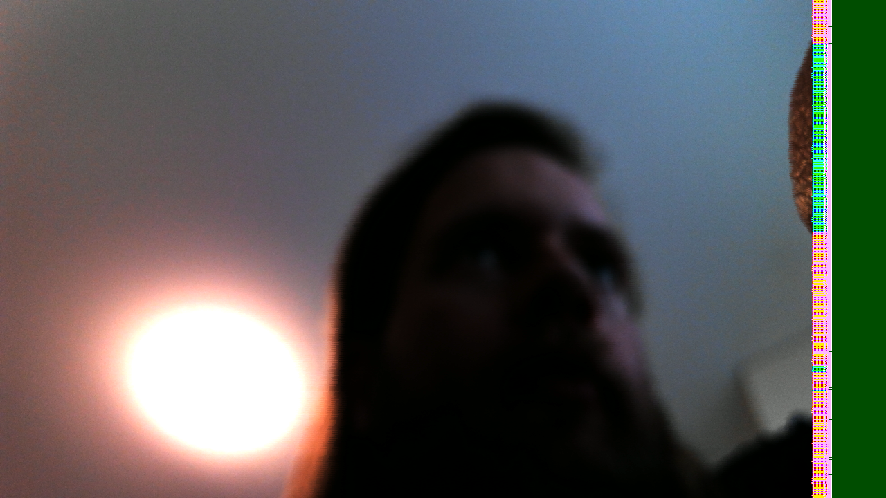

Four Cameras: First Contact.
The camera → PL → DDR → PS → host path produces recognizable photographs. Most of each photograph, anyway.
In Four Cameras, Coming Home, I left the KV260 with a routed design and a Linux media graph, but no Linux camera result. Tonight's target is smaller than the complete four-way HDMI display: get a real frame from the supplied camera into a PNG, with enough evidence to explain where it came from.
The camera is the AR1335 IAS module supplied with the KV260 accessories. It connects at J7 and uses the board's AP1302 image signal processor. Its 13-megapixel sensor specification is not the operating point of this design. The design target remains 1920 × 1536 at 30 frames per second; tonight's successful photographs are 1280 × 720. The ISP produces YUV422, a colour-space converter in the programmable logic converts it to RGB, and a framebuffer writer stores it in DDR. Linux exposes that path through V4L2. Three test-pattern lanes remain controls while the physical input is brought up.
AR1335 → AP1302 → MIPI CSI-2 RX → CSC → framebuffer writer → DDR → V4L2 → PNGGiving the camera its own image
The camera has its own EDF layer and build directory.
The first obstacle was mundane: the initialization wrapper enabled Bash's unset-variable checking, while EDF's environment script refers to optional variables that may not exist. Relaxing that check around the upstream setup script allowed the independent build to initialize. Correcting recipes during the first run then produced stale task-hash errors; restarting with stable inputs was necessary before accepting an image.
Another delay came from a much larger dependency than the immediate job needed. The broad GStreamer selection enabled SVG support, which pulled in librsvg and a Rust compiler bootstrap. Disabling that optional feature in the camera layer kept V4L2, PNG conversion and KMS available without waiting for an unrelated compiler. The final build completed all 14,999 tasks successfully, with most reused from cache.
The capture preparation records media graphs, device formats, negotiated GStreamer caps and kernel messages. GStreamer handles the V4L2 buffers and PNG encoding rather than a handwritten converter assuming a tightly packed raw buffer. Pixel order, stride and the distinction between a media-bus format and a memory format can turn a plausible-looking capture command into a misleading picture.
The agent flagged an apparent mismatch: the overlay advertises bgr888 at the framebuffer writer, while the prepared display pipeline requests RGB. Reading the actual EDF kernel driver resolved it. Its format table maps device-tree bgr888 to V4L2 RGB24; the corresponding DRM name is BGR888. The spellings belong to different API conventions. Changing the GStreamer request to BGR simply to make the names agree would introduce a mistake. The eventual capture negotiated RGB, consistent with that source mapping.
The startup script also assumes it can find every lane on the default media device. First boot needs to enumerate all media devices and configure their pads explicitly before the compositor gets involved.
Giving Linux a vote
The more consequential checks were at the hardware–driver boundary. The AXI IIC block had no interrupt connection. Vivado could implement that circuit, but the Linux driver requires an IRQ before it will register the I²C adapter. Without the adapter there would be no useful conversation with the ISP. The correction adds that interrupt to the PL-to-PS path and describes the same line in the overlay.
The reset map also needed to be checked against this design rather than copied from a nearby example. ZynqMP's EMIO GPIOs begin at offset 78; the reset slices in this design were one bit away from the offsets in the overlay. A driver toggling the wrong reset is not a small bookkeeping error when several video blocks sit next to one another.
Finally, the 32-bit YUV422 stream had been widened incorrectly for the 48-bit VPSS input. The original remap discarded the upper byte and inserted zeros between the remaining bytes. The documented two-pixel packing instead keeps all four meaningful bytes together and pads the unused upper bits. That change requires a new bitstream, not a more persuasive capture command.
These are useful limits on what the earlier implementation result meant. Timing closure established that the described circuit could be placed and routed. It did not establish that the circuit and Linux agreed on interrupts, reset lines or the contents of a pixel beat. The corrected circuit was rebuilt: setup slack was 1.989 ns, hold slack 0.010 ns, and bitstream generation completed without errors. Those figures belong to the corrected design, not the earlier one.
The finished image included the matching PL bundle and AP1302 firmware, V4L2/media tools and GStreamer plugins. I supplied a freshly formatted ext4 SD card; the image was written to it and verified byte-for-byte. With the card back in the board, QSPI boot firmware and U-Boot handed over to the SD card's kernel and root filesystem.
Linux 6.12.40 reached the EDF 25.11 login prompt and Ethernet came up at 1 Gb/s. The boot log also reported a PS display-driver probe error. That is a separate unresolved display issue, not something to conceal inside a successful Linux boot. First capture can be tested independently of HDMI.
First contact
The default firmware loader reported the camera bundle loaded. The kernel detected AP1302 revision 0.2.6 and registered four media graphs and four capture nodes. Lane 0 appeared as /dev/video0, on /dev/media3 in this boot. The numbering matters less than tracing its entities: ar1335 0, ap1302.3-003c, 80040000.csi2rx, 80000000.csc, and the lane-0 capture node. The AP1302 test-pattern control was disabled.
That graph did not start with matching dimensions. The sensor/ISP side described one size, CSI another and the CSC another. The bring-up steps set AP1302 source pad 2, CSI sink pad 0 and CSC sink pad 0 to UYVY8_1X16, then the CSC source to RBG888_1X24. That unusual RBG spelling is the driver's media-bus code. The capture device uses RGB24 in memory.
The first 1920 × 1080 attempt negotiated a nominal 120/1 frame-rate cap and stalled; the CSI driver reported “Stream Line Buffer Full!” That message means the input is not draining, not that one particular component has been convicted. I reduced the mode to 1280 × 720 and explicitly requested 30/1. A bounded pipeline then reached EOS and wrote a PNG:
gst-launch-1.0 -e -v \
v4l2src device=/dev/video0 io-mode=mmap num-buffers=1 \
! video/x-raw,format=RGB,width=1280,height=720,framerate=30/1 \
! pngenc ! filesink location=camera-720.pngThis command follows media-graph configuration; it is not a complete bring-up recipe by itself. The first frame was very dark. After a warm-up run, five more PNGs came back over Ethernet and decoded on the host as 1280 × 720 RGB. Here is the one I kept for the note.

“Found the images, they're recognisable! I see my own face. Success.” Not a calibrated scene, but a fairly persuasive identification of the person on the other end of the pipeline.
Corruption On The Far Right
It is a good image. I can recognize myself, and the camera has delivered the scene through the whole pipeline. Except at the far right: the scene stops, a narrow strip turns into a bright patterned mess, and the last 78 columns are uniform dark green. That is the defect to explain.
I immediately suspected stride:
The ‘corrupted’ strip is probably a stride thing, no?
The agent checked V4L2: 3840 bytes per line. At 1280 pixels and three bytes per pixel, that is the expected stride. It then read the running writer: width 1280, height 720, stride 3840 and RGB8 format ID 20. The writer and V4L2 agree.
The single-plane frame size was 2,764,800 bytes, also exactly 1280 × 720 × 3. So the obvious arithmetic checks out. That makes a simple stride mismatch less likely. It does not explain why the right side of my head has acquired a small textile industry.
Across the five frames, I move and the defect stays at the same edge. A smaller 640 × 480 capture also produced a recognizable scene with a damaged right edge. Reducing the resolution had got us past the stalled capture, but it had not made the picture correct.
This is where keeping the test-pattern generators became useful. A synthetic source could give us a known picture without the sensor, ISP or CSI input. The next question was whether one of those lanes would acquire the same damage on its way to a PNG.
Another lane can produce a clean frame with the same format and stride. That does not clear lane 0's writer or colour converter; those are separate instances.
The comparison narrows the question toward camera ingress or lane-0-specific processing. It does not identify the faulty boundary. The clean colour bars are encouraging, but they are also rather irritating: the system can produce a perfectly tidy right edge, just not on the photograph I want. I still do not know why. The strip stays in the picture.
Result
The camera → PL → DDR → PS → host path has delivered real, recognizable PNGs. That is tonight's completed experiment. The camera is no longer only an arrow in a diagram, and the image is no longer only a recipe.
The right-edge corruption remains unexplained. A negotiated 30/1 cap is not a measured sustained frame rate. The 1920 × 1536 target, four simultaneous streams, drop behaviour and HDMI compositor remain unvalidated. The next experiment starts with a photograph I can recognize and a defect I can reproduce.
□